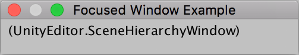

EditorWindow.focusedWindow
public static EditorWindow focusedWindow;
Description 描述
The EditorWindow which currently has keyboard focus. (Read Only)
focusedWindow can be null if no window has focus.
See Also: mouseOverWindow, Focus.

Focus other windows with a mouse click.
using UnityEngine; using UnityEditor;
// Prints the name of the focused window to a label
public class FocusedWindow : EditorWindow { [MenuItem("Examples/FocusedWindow")] public static void Init() { GetWindow<FocusedWindow>("FocusedWindow"); }
void OnGUI() { GUILayout.Label(EditorWindow.focusedWindow.ToString()); } }